山口観音/埼玉県所沢市
所沢市の狭山湖畔は西武園遊園地や競輪場、西武球場、ユネスコ村などでお馴染みの方々も多いと思う。
そのユネスコ村の隣に山口観音なる寺がある。
あ、間違え易いので一応説明しときます。ユネスコ村の正面入り口のすぐ隣にある五重塔やらお堂は狭山不動尊という別の寺、こっちは古そうに見えるが実は新しい寺で、ここはここで全国各地の名刹から色んなお堂を移築してきちゃって渋〜い雰囲気を無理矢理デッチ上げてしまった、という恐ろしく怪しい寺なのだが、行ってみるとホントに普通の古いお寺みたいなので、今回は割愛。
ここで取り上げるのはユネスコ村の裏手の駐車場の方の隣にある山口観音というお寺。
ここは霊園なども経営している、いわゆる檀家持ちのお寺である。
そもそも珍寺的には檀家持ちのお寺は珍係数が少ない（スポンサーが檀家さん、つまりフツーの人達だからあまり無茶出来ないのね）のだが、ここはひと味違う。
ってゆーかまるっきり「珍」印のお寺なのだ。
門前に茶屋などがあり歴史の古さを感じさせる。そう、ここは弘法大師が開いたといわれるえらい古い寺なのである。山門や本堂も歴史を感じさせる。
西武遊園地や球場は勿論の事、狭山湖や多摩湖すらなかった頃から此の地でブイブイいわせてたのである。
なんといっても看板自体に「名刹」と銘打たれているのだから間違い無い。
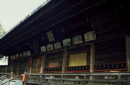 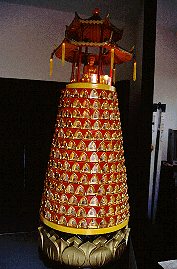
で、現在の山口観音だが、山門、本堂辺りはいたって真面目。
ただ、本堂の外壁にマニ車が取り付けられているのと台湾辺りで良く見かける派手な電飾ブッダタワーが、この後の展開をかすかに暗示しているような気が・・・
マニ車を見れば回さずにはいられないのは私の癖。
一つ一つのマニ車を全力で高速回転させるのは仏縁があるように、ではなく勿論単に面白いからである。ちなみに私、お寺にある回転ものには眼がなく、一切経を納めてある回転輪蔵（グルグル廻る本棚みたいなモンですな）や御生車などをみかけると、回転させなれば気が済まないのである、しかも全力で高速回転。
で、本堂の外壁にぐるりと一周取り付けられたマニ車を回すべく正面から左に回り込んだ時、異様なものが眼に飛び込んできた。
 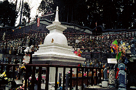 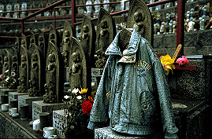
段々畑のような雛壇に置かれた大量の水子地蔵である。
しかもそれらの合間合間にはビルマのパゴダや中国風の東屋などがある。
そして何と云っても奇妙なのは塀の上に物凄く長い龍が二匹這っているのである。
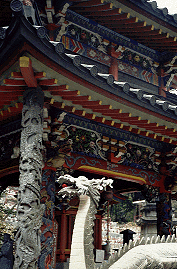 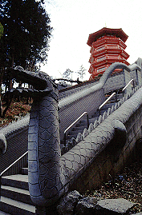
二匹の龍は頂上中央部で顔を突き合わせ、この雛壇全体を囲っている。
何じゃこりゃ〜、と思いつつ手前を見れば中国風のお堂が2つ、そこの囲い塀の上にも龍が。
こうなってくると、もはやマニ車回しどころではない。水子地蔵の大群の中に突入する。
雛壇の通路は一番下中央から同心円状にちょっとした迷路風になっている。途中ミニチュアパゴダのビルマ仏をお参りしながら頂上に付く。真偽の程は定かではないが日本初のビルマ仏と銘打ってある。
ミャンマー帰りの私としては白い大理石のビルマ仏にまた会えて感無量である。
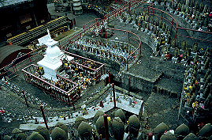 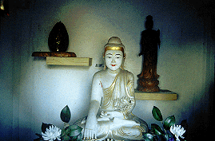
そこから下を見下ろせば雛壇の全容が見渡せ、迷路の答えを見ているかのようである。本堂の向こうにはユネスコ村のアトラクションのUFOが見えて中々シュールな光景。
そしてその奥には朱塗りのデカイ塔が見える。八角の五重塔である。
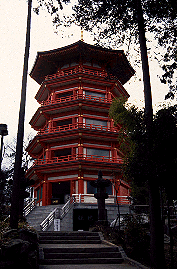 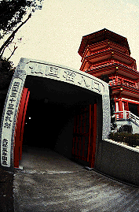
近付くと千躰観音堂とある。
さらにその塔の足元を囲うようにして仏国窟という仏像トンネルが！
四国八十八ケ所と西国三十三ケ所の移し霊場だ。トンネルを潜ってから五重塔に向かう。
ここは最近完成したもので螺旋階段で最上階まで登れる。
1層から4層までは棚が設けられ、観音像が奉納されている。
観音像は木製と陶器、彩色陶器の3種類がある。これらが壁面を覆っている。
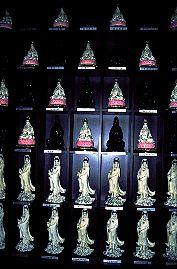 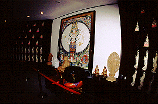 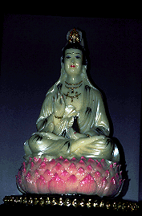
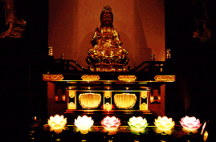 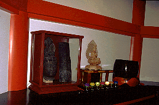
塔の入り口にいた坊さん（ここで料金を徴集する、300円也）の話によれば千躰観音堂とはいうものの実際にはまだ千躰集まっていないそうな。そういえばまだ棚に空きスペースが目立つ。
最上階は以前ここに建っていたという大日如来の仏塔のみが飾られている。
で、身体は何処に行ってしまったのかといえば、前述の坊さん曰く「鉄砲の弾になっちゃったよ」との事。
最上階のテラスからは狭山湖周辺がよく見渡せる。
おおお、見下ろせば新しく製作中の龍がのたうちまわっているではないか。
現在進行形の珍寺、この先もどんなモノを作ってくれるか楽しみである。
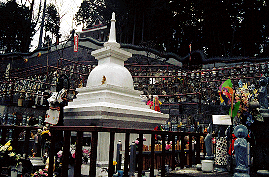 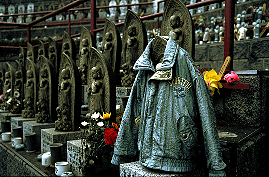
段々畑のような雛壇に置かれた大量の水子地蔵である。
しかもそれらの合間合間にはビルマのパゴダや中国風の東屋などがある。
そして何と云っても奇妙なのは塀の上に物凄く長い龍が二匹這っているのである。
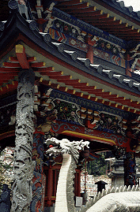 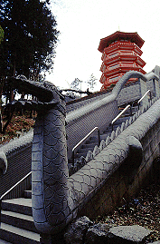
二匹の龍は頂上中央部で顔を突き合わせ、この雛壇全体を囲っている。
何じゃこりゃ〜、と思いつつ手前を見れば中国風のお堂が2つ、そこの囲い塀の上にも龍が。
こうなってくると、もはやマニ車回しどころではない。水子地蔵の大群の中に突入する。
雛壇の通路は一番下中央から同心円状にちょっとした迷路風になっている。途中ミニチュアパゴダのビルマ仏をお参りしながら頂上に付く。真偽の程は定かではないが日本初のビルマ仏と銘打ってある。
ミャンマー帰りの私としては白い大理石のビルマ仏にまた会えて感無量である。
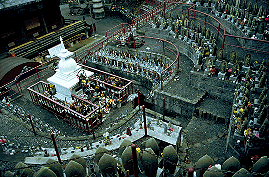 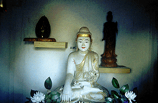
そこから下を見下ろせば雛壇の全容が見渡せ、迷路の答えを見ているかのようである。本堂の向こうにはユネスコ村のアトラクションのUFOが見えて中々シュールな光景。
そしてその奥には朱塗りのデカイ塔が見える。八角の五重塔である。
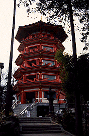 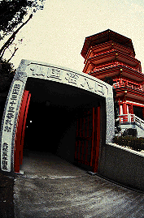
近付くと千躰観音堂とある。
さらにその塔の足元を囲うようにして仏国窟という仏像トンネルが！
四国八十八ケ所と西国三十三ケ所の移し霊場だ。トンネルを潜ってから五重塔に向かう。
ここは最近完成したもので螺旋階段で最上階まで登れる。
1層から4層までは棚が設けられ、観音像が奉納されている。
観音像は木製と陶器、彩色陶器の3種類がある。これらが壁面を覆っている。
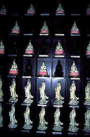 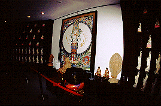 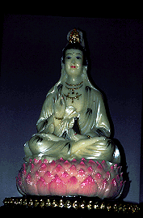
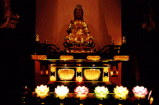 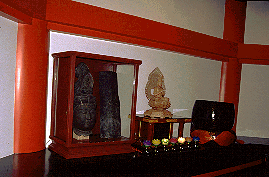
塔の入り口にいた坊さん（ここで料金を徴集する、300円也）の話によれば千躰観音堂とはいうものの実際にはまだ千躰集まっていないそうな。そういえばまだ棚に空きスペースが目立つ。
最上階は以前ここに建っていたという大日如来の仏塔のみが飾られている。
で、身体は何処に行ってしまったのかといえば、前述の坊さん曰く「鉄砲の弾になっちゃったよ」との事。
最上階のテラスからは狭山湖周辺がよく見渡せる。
おおお、見下ろせば新しく製作中の龍がのたうちまわっているではないか。
現在進行形の珍寺、この先もどんなモノを作ってくれるか楽しみである。
2000.2
珍寺大道場 HOME